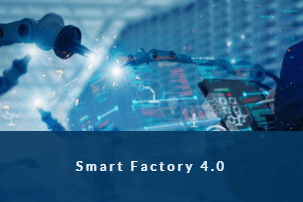

Les innovations du groupe ALTEN
Au sein d'ALTEN, on peut trouver l'initiave Smart Digital. Celle-ci consiste en 9 programmes de recherche sur des thématiques transverses autour du numérique qui couvrent l'ensemble des secteurs d'intervention du groupe. Ces programmes sont très actifs avec plus de 100 projets internes. Nous parcourerons ces programmes à travers 3 catégories qui les rassemblent, l'Industrie, le Data Management et la Sécurité.
Industrie
Factory 4.0
Le programme Smart Factory 4.0 a pour but d'accroître la performance industrielle en alliant intelligences humaine et artificielle afin de permettre une flexibilité de production vis-à-vis d'une demande client de plus en plus personnalisée. Pour cela, ce programme traite les fondamentales techniques de l'usine du futur comme l’IoT (Internet of Things), le jumeau numérique (qui permet d'avoir une réplique virtuelle du monde réel en temps réel), l’IA, la réalité augmentée, la robotique, le système informatique intégré ou encore la cybersécurité.
Mobility
Ce secteur de recherche doit relever de nombreux défis du fait de la forte augmentation du nombre de déplacements et de leurs impacts environnementaux. Il regroupe des projets innovants s'articulant autour des mutations d'une mobilité toujours plus respectueuse de l'environnement et du bien-être des usagers.
Design
Le programme de recherche Smart Design a pour objectif de développer et d'apporter des solutions digitales concrètes et innovantes sur la conception de systèmes durables, la gestion des incertitudes et la traçabilité de leurs exigences afin d'intégrer l'usage des produits, intégrer l'écoresponsabilité et réduire le Time to Market.
Data Management
Data Exchange

Le programme de recherche Smart Data Exchange vise à automatiser le travail de préparation des données, de sélection des outils et de validation des différents modèles d'intelligence artificielle au service du Data Scientist. La conception de ces intelligences artificielles doit être adaptée à certaines applications comme la détection d'anomalies dans des données en streaming, l'analyse et la traçabilité d'exigences pour la conformité normative d'un produit ou encore la Reconnaissance Optique de Caractères et la numérisation de l'information.
Communications
Le programme Smart Communications vise à exploiter la 5g comme vecteur majeur de la continuité numérique dans tout type d'usage ainsi que d'en optimiser la performance.

Transactions
Le programme de recherche Smart Transactions a pour but de faciliter, valoriser et sécuriser les échanges entre les particuliers et différents acteurs professionnels des secteurs tertiaires et industriels, tout en respectant l'évoluiton des cadres réglementaires.
Sécurité
Quality & Green Supply Chain
Smart Quality & Green Supply Chain investigue l’utilisation des technologies numériques pour faire entrer la Qualité et la Supply Chain dans une nouvelle ère plus interactive et plus responsable de notre environnement à l’instar de l’industrie 4.0. L’utilisation de l’intelligence artificielle et de données numérisées permet d’obtenir plus de réactivité, de transparence et d’intelligence dans la prise de décision au quotidien mais aussi d’apporter des améliorations significatives à long terme.

Green & Secure Systems

Le programme Smart Green & Secure Systems regroupe la réalisation de projets innovants dans le domaine des systèmes embarqués, s’articulant autour des problématiques de sécurité, d’écoconception, d’intelligence ambiante et de systèmes en essaims. Ce programme adresse notamment la problématique de la mesure de l’empreinte carbone en écoconception sur 3 niveaux : logiciels (embarqués ou applicatifs), objets connectés, systèmes complexes.
Healthcare
L’écosystème de la santé est confronté à de nouveaux enjeux sur l’organisation des soins et l’expérience du patient. L’innovation est la clé de voûte pour répondre à ces nouveaux défis sociétaux. Au sein de son Lab ALTEN x AIXIAL, le programme Smart Healthcare apporte une réflexion autour de la digitalisation de ce système de santé, l’intégration de data analyse et de l’intelligence artificielle, ainsi que le développement d’IOT innovants afin de dessiner le futur de la recherche clinique.